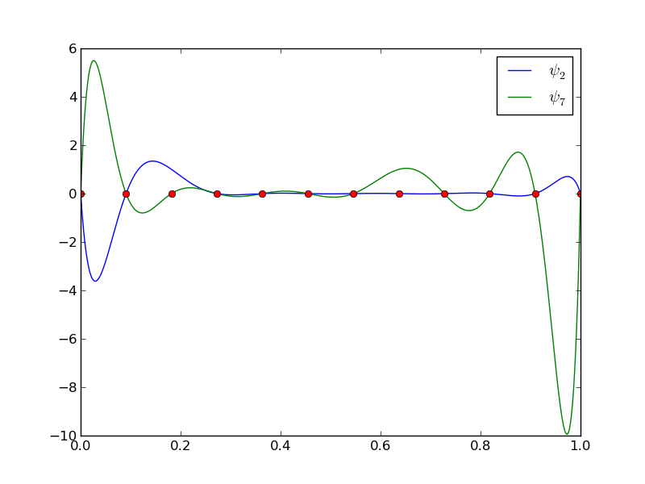
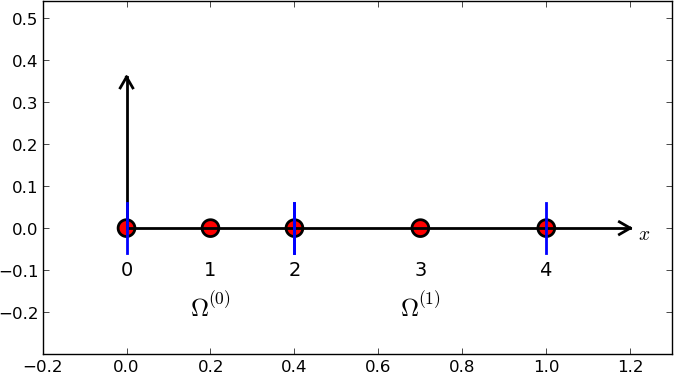
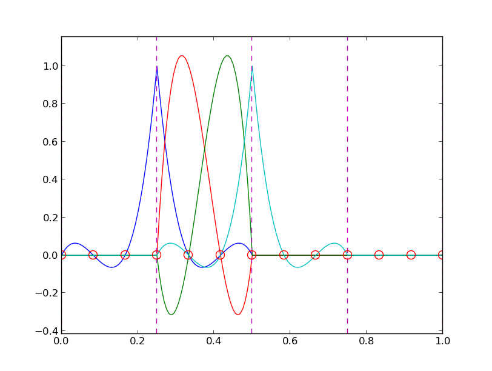
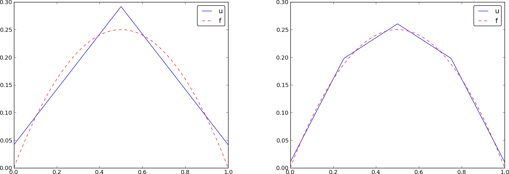
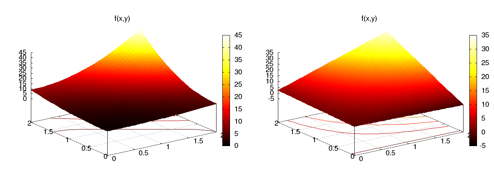
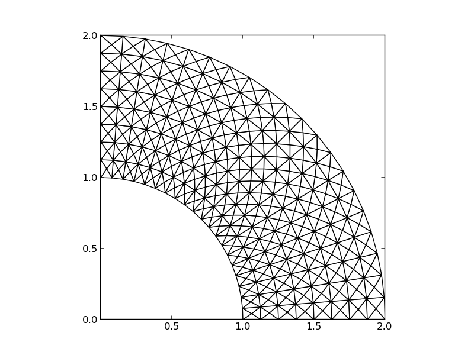
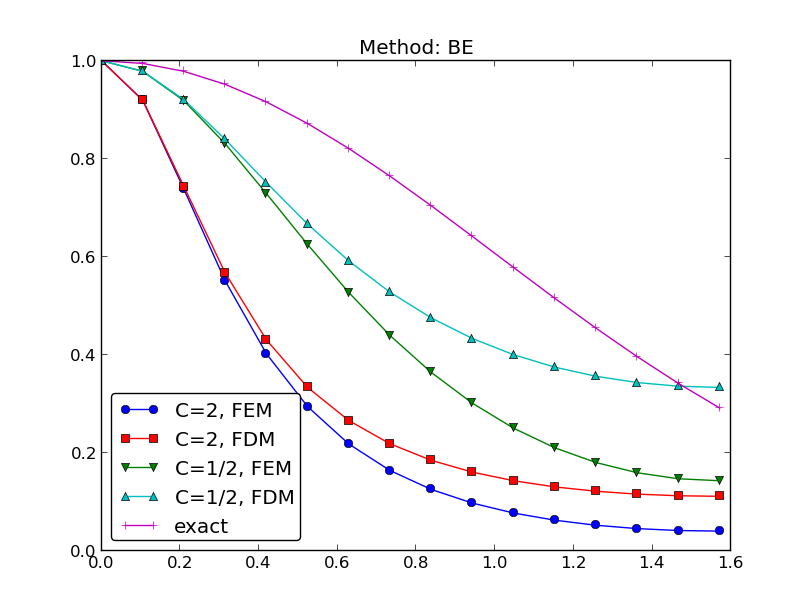
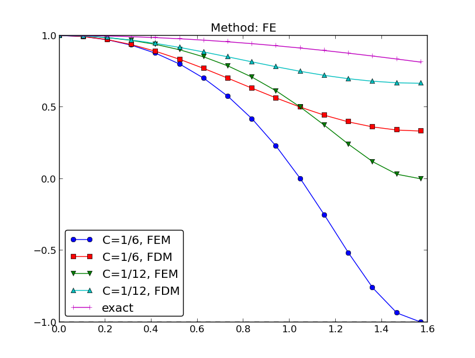
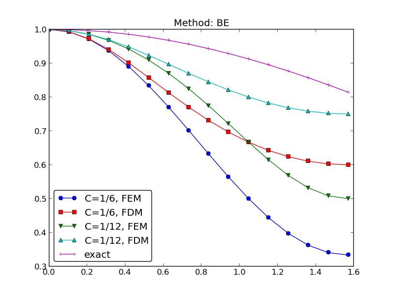

Why finite elements?
Domain for flow around a dolphin
The flow
Solving PDEs by the finite element method
We start with function approximation, then we treat PDEs
Approximation in vector spaces
Approximation set-up
How to determine the coefficients?
Approximation of planar vectors; problem
Approximation of planar vectors; vector space terminology
The least squares method; principle
The least squares method; calculations
The projection (or Galerkin) method
Approximation of general vectors
The least squares method
The projection (or Galerkin) method
Approximation of functions
The least squares method can be extended from vectors to functions
The least squares method; details
The projection (or Galerkin) method
Example: linear approximation; problem
Example: linear approximation; solution
Example: linear approximation; plot
Implementation of the least squares method; ideas
Implementation of the least squares method; symbolic code
Improved code if symbolic integration fails
Implementation of the least squares method; plotting
Implementation of the least squares method; application
Perfect approximation; parabola approximating parabola
Perfect approximation; the general result
Perfect approximation; proof of the general result
Finite-precision/numerical computations; question
Finite-precision/numerical computations; results
The ill-conditioning is due to almost linearly dependent basis functions for large \( N \)
Ill-conditioning: general conclusions
Fourier series approximation; problem and code
Fourier series approximation; plot
Fourier series approximation; improvements
Fourier series approximation; final results
Orthogonal basis functions
Function for the least squares method with orthogonal basis functions
Function for the least squares method with orthogonal basis functions; symbolic and numerical integration
The collocation or interpolation method; ideas and math
The collocation or interpolation method; implementation
The collocation or interpolation method; approximating a parabola by linear functions
Lagrange polynomials; motivation and ideas
Lagrange polynomials; formula and code
Lagrange polynomials; successful example
Lagrange polynomials; a less successful example
Lagrange polynomials; oscillatory behavior
Lagrange polynomials; remedy for strong oscillations
Lagrange polynomials; recalculation with Chebyshev nodes
Lagrange polynomials; less oscillations with Chebyshev nodes
Finite element basis functions
The basis functions have so far been global: \( \baspsi_i(x) \neq 0 \) almost everywhere
In the finite element method we use basis functions with local support
The linear combination of hat functions is a piecewise linear function
Elements and nodes
Example on elements with two nodes (P1 elements)
Illustration of two basis functions on the mesh
Example on elements with three nodes (P2 elements)
Some corresponding basis functions (P2 elements)
Examples on elements with four nodes (P3 elements)
Some corresponding basis functions (P3 elements)
The numbering does not need to be regular from left to right
Interpretation of the coefficients \( c_i \)
Properties of the basis functions
How to construct quadratic \( \basphi_i \) (P2 elements)
Example on linear \( \basphi_i \) (P1 elements)
Example on cubic \( \basphi_i \) (P3 elements)
Calculating the linear system for \( c_i \)
Computing a specific matrix entry (1)
Computing a specific matrix entry (2)
Calculating a general row in the matrix; figure
Calculating a general row in the matrix; details
Calculation of the right-hand side
Specific example with two elements; linear system and solution
Specific example with two elements; plot
Specific example with four elements; plot
Specific example: what about P2 elements?
Assembly of elementwise computations
Split the integrals into elementwise integrals
The element matrix and local vs global node numbers
Illustration of the matrix assembly: regularly numbered P1 elements
Illustration of the matrix assembly: regularly numbered P3 elements
Illustration of the matrix assembly: irregularly numbered P1 elements
Assembly of the right-hand side
Mapping to a reference element
We use affine mapping: linear stretch of \( X\in [-1,1] \) to \( x\in [x_L,x_R] \)
Integral transformation
Advantages of the reference element
Standardized basis functions for P1 elements
Standardized basis functions for P2 elements
How to find the polynomial expressions?
Integration over a reference element; element matrix
Integration over a reference element; element vector
Tedious calculations! Let's use symbolic software
Implementation
Compute finite element basis functions in the reference element
Compute the element matrix
Example on symbolic vs numeric element matrix
Compute the element vector
Fallback on numerical integration if symbolic integration of \( \int f\refphi_r dx \) fails
Linear system assembly and solution
Linear system solution
Example on computing symbolic approximations
Example on computing numerical approximations
The structure of the coefficient matrix
General result: the coefficient matrix is sparse
Exemplifying the sparsity for P2 elements
Matrix sparsity pattern for regular/random numbering of P1 elements
Matrix sparsity pattern for regular/random numbering of P3 elements
Sparse matrix storage and solution
Approximate \( f\sim x^9 \) by various elements; code
Approximate \( f\sim x^9 \) by various elements; plot
Comparison of finite element and finite difference approximation
Interpolation/collocation with finite elements
Galerkin/project and least squares vs collocation/interpolation or finite differences
Expressing the left-hand side in finite difference operator notation
Treating the right-hand side; Trapezoidal rule
Treating the right-hand side; Simpson's rule
Finite element approximation vs finite differences
Making finite elements behave as finite differences
Limitations of the nodes and element concepts
The generalized element concept has cells, vertices, nodes, and degrees of freedom
The concept of a finite element
Basic data structures: vertices, cells, dof_map
Example: data structures for P2 elements
Example: P0 elements
A program with the fundamental algorithmic steps
Approximating a parabola by P0 elements
Computing the error of the approximation; principles
Computing the error of the approximation; details
How does the error depend on \( h \) and \( d \)?
Cubic Hermite polynomials; definition
Cubic Hermite polynomials; derivation
Cubic Hermite polynomials; result
Numerical integration
Common form of a numerical integration rule
The Midpoint rule
Newton-Cotes rules apply the nodes
Gauss-Legendre rules apply optimized points
Approximation of functions in 2D
Quick overview of the 2D case
2D basis functions as tensor products of 1D functions
Tensor products
Double or single index?
Example on 2D (bilinear) basis functions; formulas
Example on 2D (bilinear) basis functions; plot
Implementation; principal changes to the 1D code
Implementation; 2D integration
Implementation; 2D basis functions
Implementation; application
Implementation; trying a perfect expansion
Generalization to 3D
Finite elements in 2D and 3D
Examples on cell types
Rectangular domain with 2D P1 elements
Deformed geometry with 2D P1 elements
Rectangular domain with 2D Q1 elements
Basis functions over triangles in the physical domain
Basic features of 2D elements
Linear mapping of reference element onto general triangular cell
\( \basphi_i \): pyramid shape, composed of planes
Element matrices and vectors
Basis functions over triangles in the reference cell
2D P1, P2, P3, P4, P5, and P6 elements
P1 elements in 1D, 2D, and 3D
P2 elements in 1D, 2D, and 3D
Affine mapping of the reference cell; formula
Affine mapping of the reference cell; figure
Isoparametric mapping of the reference cell
Computing integrals
Remark on going from 1D to 2D/3D
Basic principles for approximating differential equations
We shall apply least squares, Galerkin/projection, and collocation to differential equation models
Abstract differential equation
Abstract boundary conditions
Reminder about notation
New topics: variational formulation and boundary conditions
Residual-minimizing principles
The least squares method
The Galerkin method
The Method of Weighted Residuals
New terminology: test and trial functions
The collocation method
Examples on using the principles
The first model problem
Boundary conditions
The least squares method; principle
The least squares method; equation system
The least squares method; matrix and right-hand side expressions
Orthogonality of the basis functions gives diagonal matrix
Least squares method; solution
The Galerkin method; principle
The Galerkin method; solution
The collocation method
Comparison of the methods
Useful techniques
Integration by parts has many advantages
We use a boundary function to deal with non-zero Dirichlet boundary conditions
Example on constructing a boundary function for two Dirichlet conditions
Example on constructing a boundary function for one Dirichlet conditions
With a \( B(x) \), \( u\not\in V \), but \( \sum_{j}c_j\baspsi_j\in V \)
Abstract notation for variational formulations
Example on abstract notation
Bilinear and linear forms
The linear system associated with the abstract form
Equivalence with minimization problem
Examples on variational formulations
Variable coefficient; problem
Variable coefficient; Galerkin principle
Variable coefficient; integration by parts
Variable coefficient; variational formulation
Variable coefficient; linear system (the easy way)
Variable coefficient; linear system (full derivation)
First-order derivative in the equation and boundary condition; problem
First-order derivative in the equation and boundary condition; details
First-order derivative in the equation and boundary condition; observations
First-order derivative in the equation and boundary condition; abstract notation (optional)
First-order derivative in the equation and boundary condition; linear system
Terminology: natural and essential boundary conditions
Nonlinear coefficient; problem
Nonlinear coefficient; variational formulation
Nonlinear coefficient; where does the nonlinearity cause challenges?
Examples on full computations
Dirichlet and Neumann conditions; problem
Dirichlet and Neumann conditions; linear system
Dirichlet and Neumann conditions; integration
Dirichlet and Neumann conditions; \( 2\times 2 \) system
When is the numerical method is exact?
Computing with finite elements
Variational formulation
How to deal with the boundary conditions?
Computation in the global physical domain; formulas
Computation in the global physical domain; details
Computation in the global physical domain; linear system
Write out the corresponding difference equation
Comparison with a finite difference discretization
Cellwise computations; formulas
Cellwise computations; details
Cellwise computations; details of boundary cells
Cellwise computations; assembly
General construction of a boundary function
Explanation
Example with two Dirichlet values; variational formulation
Example with two Dirichlet values; boundary function
Example with two Dirichlet values; details
Example with two Dirichlet values; cellwise computations
Modification of the linear system; ideas
Modification of the linear system; original system
Modification of the linear system; row replacement
Modification of the linear system; element matrix/vector
Symmetric modification of the linear system; algorithm
Symmetric modification of the linear system; example
Symmetric modification of the linear system; element level
Boundary conditions: specified derivative
The variational formulation
Method 1: Boundary function and exclusion of Dirichlet degrees of freedom
Method 2: Use all \( \basphi_i \) and insert the Dirichlet condition in the linear system
How the Neumann condition impacts the element matrix and vector
The finite element algorithm
Python pseudo code; the element matrix and vector
Python pseudo code; boundary conditions and assembly
Variational formulations in 2D and 3D
Integration by parts
Example on integration by parts; problem
Example on integration by parts; details (1)
Example on integration by parts; details (2)
Example on integration by parts; linear system
Transformation to a reference cell in 2D/3D (1)
Transformation to a reference cell in 2D/3D (2)
Numerical integration
Time-dependent problems
Example: diffusion problem
A Forward Euler scheme; ideas
A Forward Euler scheme; stages in the discretization
A Forward Euler scheme; weighted residual (or Galerkin) principle
A Forward Euler scheme; integration by parts
New notation for the solution at the most recent time levels
Deriving the linear systems
Structure of the linear systems
Computational algorithm
Comparing P1 elements with the finite difference method; ideas
Comparing P1 elements with the finite difference method; results
Discretization in time by a Backward Euler scheme
The variational form of the time-discrete problem
Calculations with P1 elements in 1D
Dirichlet boundary conditions
Boundary function
Finite element basis functions
Modification of the linear system; the raw system
Modification of the linear system; setting Dirichlet conditions
Modification of the linear system; Backward Euler example
Analysis of the discrete equations
Handy formulas
Amplification factor for the Forward Euler method; results
Amplification factor for the Backward Euler method; results
Amplification factors for smaller time steps; Forward Euler
Amplification factors for smaller time steps; Backward Euler

The finite element method has many concepts and a jungle of details. This learning strategy minimizes the mixing of ideas, concepts, and technical details.

General idea of finding an approximation \( u(x) \) to some given \( f(x) \): $$ u(x) = \sum_{i=0}^N c_i\baspsi_i(x) $$
where
We shall address three approaches:
Our mathematical framework for doing this is phrased in a way such that it becomes easy to understand and use the FEniCS software package for finite element computing.
Given a vector \( \f = (3,5) \), find an approximation to \( \f \) directed along a given line.
Observation to be used later: the vanishing derivative \eqref{fem:vec:dEdc0:v1} can be alternatively written as $$ (\e, \psib_0) = 0 $$
Given a vector \( \f \), find an approximation \( \u\in V \): $$ \begin{equation*} V = \hbox{span}\,\{\psib_0,\ldots,\psib_N\} \end{equation*} $$
We have a set of linearly independent basis vectors \( \psib_0,\ldots,\psib_N \). Any \( \u\in V \) can then be written as $$ \u = \sum_{j=0}^Nc_j\psib_j$$
Idea: find \( c_0,\ldots,c_N \) such that \( E= ||\e||^2 \) is minimized, \( \e=\f-\u \). $$ \begin{align*} E(c_0,\ldots,c_N) &= (\e,\e) = (\f -\sum_jc_j\psib_j,\f -\sum_jc_j\psib_j) \nonumber\\ &= (\f,\f) - 2\sum_{j=0}^Nc_j(\f,\psib_j) + \sum_{p=0}^N\sum_{q=0}^N c_pc_q(\psib_p,\psib_q) \end{align*} $$ $$ \begin{equation*} \frac{\partial E}{\partial c_i} = 0,\quad i=0,\ldots,N \end{equation*} $$
After some work we end up with a linear system $$ \begin{align} \sum_{j=0}^N A_{i,j}c_j &= b_i,\quad i=0,\ldots,N\\ A_{i,j} &= (\psib_i,\psib_j)\\ b_i &= (\psib_i, \f) \end{align} $$
Can be shown that minimizing \( ||\e|| \) implies that \( \e \) is orthogonal to all \( \v\in V \): $$ (\e,\v)=0,\quad \forall\v\in V $$ which implies that \( \e \) most be orthogonal to each basis vector: $$ (\e,\psib_i)=0,\quad i=0,\ldots,N $$
This orthogonality condition is the principle of the projection (or Galerkin) method. Leads to the same linear system as in the least squares method.
Let \( V \) be a function space spanned by a set of basis functions \( \baspsi_0,\ldots,\baspsi_N \), $$ \begin{equation*} V = \hbox{span}\,\{\baspsi_0,\ldots,\baspsi_N\} \end{equation*} $$
Find \( u\in V \) as a linear combination of the basis functions: $$ u = \sum_{j\in\If} c_j\baspsi_j,\quad\If = \{0,1,\ldots,N\} $$
As in the vector case, minimize the (square) norm of the error, \( E \), with respect to the coefficients \( c_j \), \( j\in\If \): $$ E = (e,e) = (f-u,f-u) = (f(x)-\sum_{j\in\If} c_j\baspsi_j(x), f(x)-\sum_{j\in\If} c_j\baspsi_j(x)) $$ $$ \frac{\partial E}{\partial c_i} = 0,\quad i=\in\If $$
But what is the scalar product when \( \baspsi_i \) is a function? $$(f,g) = \int_\Omega f(x)g(x)\, dx$$ (natural extension from Eucledian product \( (\u, \v) = \sum_j u_jv_j \))
The computations are identical to the vector case, and consequently we get a linear system $$ \sum_{j\in\If}^N A_{i,j}c_j = b_i,\ i\in\If,\quad A_{i,j} = (\baspsi_i,\baspsi_j),\ b_i = (f,\baspsi_i) $$
As before, minimizing \( (e,e) \) is equivalent to $$ (e,\baspsi_i)=0,\quad i\in\If \label{fem:approx:Galerkin0} $$
which is equivalent to $$ (e,v)=0,\quad\forall v\in V \label{fem:approx:Galerkin} $$ which is the projection (or Galerkin) method.
The algebra is the same as in the multi-dimensional vector case, and we get the same linear system as arose from the least squares method.
Approximate a parabola \( f(x) = 10(x-1)^2 - 1 \) by a straight line.

Consider symbolic computation of the linear system, where
sympy expression f (involving
the symbol x),psi is a list of \( \sequencei{\baspsi} \),Omega is a 2-tuple/list holding the domain \( \Omega \)
1 2 3 4 5 6 7 8 9 10 11 12 13 14 15 16 17 18 | import sympy as sp
def least_squares(f, psi, Omega):
N = len(psi) - 1
A = sp.zeros((N+1, N+1))
b = sp.zeros((N+1, 1))
x = sp.Symbol('x')
for i in range(N+1):
for j in range(i, N+1):
A[i,j] = sp.integrate(psi[i]*psi[j],
(x, Omega[0], Omega[1]))
A[j,i] = A[i,j]
b[i,0] = sp.integrate(psi[i]*f, (x, Omega[0], Omega[1]))
c = A.LUsolve(b)
u = 0
for i in range(len(psi)):
u += c[i,0]*psi[i]
return u, c
|
Observe: symmetric coefficient matrix so we can halve the integrations.
sp.integrate fails, it returns an sp.Integral object.
We can test on this object and fall back on numerical integration.symbolic to explicitly choose
between symbolic and numerical computing.
1 2 3 4 5 6 7 8 9 10 11 12 13 14 15 16 17 18 19 20 21 22 | def least_squares(f, psi, Omega, symbolic=True):
...
for i in range(N+1):
for j in range(i, N+1):
integrand = psi[i]*psi[j]
if symbolic:
I = sp.integrate(integrand, (x, Omega[0], Omega[1]))
if not symbolic or isinstance(I, sp.Integral):
# Could not integrate symbolically,
# fall back on numerical integration
integrand = sp.lambdify([x], integrand)
I = sp.mpmath.quad(integrand, [Omega[0], Omega[1]])
A[i,j] = A[j,i] = I
integrand = psi[i]*f
if symbolic:
I = sp.integrate(integrand, (x, Omega[0], Omega[1]))
if not symbolic or isinstance(I, sp.Integral):
integrand = sp.lambdify([x], integrand)
I = sp.mpmath.quad(integrand, [Omega[0], Omega[1]])
b[i,0] = I
...
|
Compare \( f \) and \( u \) visually:
1 2 3 4 5 6 7 8 9 10 11 12 13 14 | def comparison_plot(f, u, Omega, filename='tmp.pdf'):
x = sp.Symbol('x')
# Turn f and u to ordinary Python functions
f = sp.lambdify([x], f, modules="numpy")
u = sp.lambdify([x], u, modules="numpy")
resolution = 401 # no of points in plot
xcoor = linspace(Omega[0], Omega[1], resolution)
exact = f(xcoor)
approx = u(xcoor)
plot(xcoor, approx)
hold('on')
plot(xcoor, exact)
legend(['approximation', 'exact'])
savefig(filename)
|
All code in module approx1D.py
1 2 3 4 5 | >>> from approx1D import *
>>> x = sp.Symbol('x')
>>> f = 10*(x-1)**2-1
>>> u, c = least_squares(f=f, psi=[1, x], Omega=[1, 2])
>>> comparison_plot(f, u, Omega=[1, 2])
|
1 2 3 4 5 6 7 8 | >>> from approx1D import *
>>> x = sp.Symbol('x')
>>> f = 10*(x-1)**2-1
>>> u, c = least_squares(f=f, psi=[1, x, x**2], Omega=[1, 2])
>>> print u
10*x**2 - 20*x + 9
>>> print sp.expand(f)
10*x**2 - 20*x + 9
|
least_squares is \( c_i=0 \) for \( i>2 \)If \( f\in V \), least squares and projection/Galerkin give \( u=f \).
If \( f\in V \), \( f=\sum_{j\in\If}d_j\baspsi_j \), for some \( \sequencei{d} \). Then $$ \begin{equation*} b_i = (f,\baspsi_i) = \sum_{j\in\If}d_j(\baspsi_j, \baspsi_i) = \sum_{j\in\If} d_jA_{i,j} \end{equation*} $$ The linear system \( \sum_j A_{i,j}c_j = b_i \), \( i\in\If \), is then $$ \begin{equation*} \sum_{j\in\If}c_jA_{i,j} = \sum_{j\in\If}d_jA_{i,j},\quad i\in\If \end{equation*} $$ which implies that \( c_i=d_i \) for \( i\in\If \) and \( u \) is identical to \( f \).
The previous computations were symbolic. What if we solve the linear system numerically with standard arrays?
That is, \( f \) is parabola, but we approximate with $$ u(x) = c_0 + c_1x + c_2x^2 + c_3x^3 +\cdots + c_Nx^N $$
We expect \( c_2=c_3=\cdots=c_N=0 \) since \( f\in V \) implies \( u=f \).
Will we get this result with finite precision computer arithmetic?
| exact | sympy | numpy32 | numpy64 |
|---|---|---|---|
| 9 | 9.62 | 5.57 | 8.98 |
| -20 | -23.39 | -7.65 | -19.93 |
| 10 | 17.74 | -4.50 | 9.96 |
| 0 | -9.19 | 4.13 | -0.26 |
| 0 | 5.25 | 2.99 | 0.72 |
| 0 | 0.18 | -1.21 | -0.93 |
| 0 | -2.48 | -0.41 | 0.73 |
| 0 | 1.81 | -0.013 | -0.36 |
| 0 | -0.66 | 0.08 | 0.11 |
| 0 | 0.12 | 0.04 | -0.02 |
| 0 | -0.001 | -0.02 | 0.002 |
matrix and lu_solve from sympy.mpmath.fpnumpy matrix with 4-byte floatsnumpy matrix with 8-byte floats

Let's approximate \( f \) by a typical Fourier series expansion $$ u(x) = \sum_i a_i\sin i\pi x = \sum_{j=0}^Nc_j\sin((j+1)\pi x) $$
which means that $$ \begin{equation*} V = \hbox{span}\,\{ \sin \pi x, \sin 2\pi x,\ldots,\sin (N+1)\pi x\} \end{equation*} $$
Computations using the least_squares function:
1 2 3 4 5 6 7 | N = 3
from sympy import sin, pi
psi = [sin(pi*(i+1)*x) for i in range(N+1)]
f = 10*(x-1)**2 - 1
Omega = [0, 1]
u, c = least_squares(f, psi, Omega)
comparison_plot(f, u, Omega)
|
Left: \( N=3 \), right: \( N=11 \):

All \( \baspsi_i(0)=0 \) and hence \( u(0)=0 \neq f(0)=9 \). Similar problem at \( x=1 \). The boundary values of \( u \) are always wrong!
\( N=3 \) vs \( N=11 \):

This choice of sine functions as basis functions is popular because
1 2 3 4 5 6 7 8 9 10 11 12 13 | def least_squares_orth(f, psi, Omega):
N = len(psi) - 1
A = [0]*(N+1)
b = [0]*(N+1)
x = sp.Symbol('x')
for i in range(N+1):
A[i] = sp.integrate(psi[i]**2, (x, Omega[0], Omega[1]))
b[i] = sp.integrate(psi[i]*f, (x, Omega[0], Omega[1]))
c = [b[i]/A[i] for i in range(len(b))]
u = 0
for i in range(len(psi)):
u += c[i]*psi[i]
return u, c
|
Extensions:
symbolic argument).sp.Integral is returned from sp.integrate).
1 2 3 4 5 6 7 8 9 10 11 12 13 14 15 16 | def least_squares_orth(f, psi, Omega, symbolic=True):
...
for i in range(N+1):
# Diagonal matrix term
A[i] = sp.integrate(psi[i]**2, (x, Omega[0], Omega[1]))
# Right-hand side term
integrand = psi[i]*f
if symbolic:
I = sp.integrate(integrand, (x, Omega[0], Omega[1]))
if not symbolic or isinstance(I, sp.Integral):
print 'numerical integration of', integrand
integrand = sp.lambdify([x], integrand)
I = sp.mpmath.quad(integrand, [Omega[0], Omega[1]])
b[i] = I
...
|
Assumption above: \( \int_\Omega\basphi_i^2dx \) works symbolically (but there is no guarantee!)
Here is another idea for approximating \( f(x) \) by \( u(x)=\sum_jc_j\baspsi_j \):
This is a linear system with no need for integration: $$ \begin{align} \sum_{j\in\If} A_{i,j}c_j &= b_i,\quad i\in\If\\ A_{i,j} &= \baspsi_j(\xno{i})\\ b_i &= f(\xno{i}) \end{align} $$
No symmetric matrix: \( \baspsi_j(\xno{i})\neq \baspsi_i(\xno{j}) \) in general
points holds the interpolation/collocation points
1 2 3 4 5 6 7 8 9 10 11 12 13 14 15 16 17 | def interpolation(f, psi, points):
N = len(psi) - 1
A = sp.zeros((N+1, N+1))
b = sp.zeros((N+1, 1))
x = sp.Symbol('x')
# Turn psi and f into Python functions
psi = [sp.lambdify([x], psi[i]) for i in range(N+1)]
f = sp.lambdify([x], f)
for i in range(N+1):
for j in range(N+1):
A[i,j] = psi[j](points[i])
b[i,0] = f(points[i])
c = A.LUsolve(b)
u = 0
for i in range(len(psi)):
u += c[i,0]*psi[i](x)
return u
|

Motivation:
Hence, \( c_i = f(x_i) \) and $$ u(x) = \sum_{j\in\If} f(\xno{i})\baspsi_i(x) $$
1 2 3 4 5 6 | def Lagrange_polynomial(x, i, points):
p = 1
for k in range(len(points)):
if k != i:
p *= (x - points[k])/(points[i] - points[k])
return p
|


12 points, degree 11, plot of two of the Lagrange polynomials - note that they are zero at all points except one.

Problem: strong oscillations near the boundaries for larger \( N \) values.
The oscillations can be reduced by a more clever choice of interpolation points, called the Chebyshev nodes: $$ \xno{i} = \half (a+b) + \half(b-a)\cos\left( \frac{2i+1}{2(N+1)}pi\right),\quad i=0\ldots,N $$ on an interval \( [a,b] \).

12 points, degree 11, plot of two of the Lagrange polynomials - note that they are zero at all points except one.


Split \( \Omega \) into non-overlapping subdomains called elements: $$ \Omega = \Omega^{(0)}\cup \cdots \cup \Omega^{(N_e)} $$
On each element, introduce points called nodes: \( \xno{0},\ldots,\xno{N_n} \)

Data structure: nodes holds coordinates or nodes, elements holds the
node numbers in each element
1 2 | nodes = [0, 1.2, 2.4, 3.6, 4.8, 5]
elements = [[0, 1], [1, 2], [2, 3], [3, 4], [4, 5]]
|

1 2 | nodes = [0, 0.125, 0.25, 0.375, 0.5, 0.625, 0.75, 0.875, 1.0]
elements = [[0, 1, 2], [2, 3, 4], [4, 5, 6], [6, 7, 8]]
|


1 2 3 4 5 | d = 3 # d+1 nodes per element
num_elements = 4
num_nodes = num_elements*d + 1
nodes = [i*0.5 for i in range(num_nodes)]
elements = [[i*d+j for j in range(d+1)] for i in range(num_elements)]
|


1 2 | nodes = [1.5, 5.5, 4.2, 0.3, 2.2, 3.1]
elements = [[2, 1], [4, 5], [0, 4], [3, 0], [5, 2]]
|
Important property: \( c_i \) is the value of \( u \) at node \( i \), \( \xno{i} \): $$ u(\xno{i}) = \sum_{j\in\If} c_j\basphi_j(\xno{i}) = c_i\basphi_i(\xno{i}) = c_i $$
because \( \basphi_j(\xno{i}) =0 \) if \( i\neq j \) and \( \basphi_i(\xno{i}) =1 \)


\( A_{2,3}=\int_\Omega\basphi_2\basphi_3 dx \): \( \basphi_2\basphi_3\neq 0 \) only over element 2. There, $$ \basphi_3(x) = (x-x_2)/h,\quad \basphi_2(x) = 1- (x-x_2)/h$$ $$ A_{2,3} = \int_\Omega \basphi_2\basphi_{3}\dx = \int_{\xno{2}}^{\xno{3}} \left(1 - \frac{x - \xno{2}}{h}\right) \frac{x - x_{2}}{h} \dx = \frac{h}{6} $$

Need a specific \( f(x) \) to do more...



Important observations:
Now,
i=elements[e][r])


Important observations:
Instead of computing $$ \begin{equation*} \tilde A^{(e)}_{r,s} = \int_{\Omega^{(e)}}\basphi_{q(e,r)}(x)\basphi_{q(e,s)}(x)dx = \int_{x_L}^{x_R}\basphi_{q(e,r)}(x)\basphi_{q(e,s)}(x)dx \end{equation*} $$ we now map \( [x_L, x_R] \) to a standardized reference element domain \( [-1,1] \) with local coordinate \( X \)
Reference element integration: just change integration variable from \( x \) to \( X \). Introduce local basis function $$ \refphi_r(X) = \basphi_{q(e,r)}(x(X)) $$ $$ \tilde A^{(e)}_{r,s} = \int_{\Omega^{(e)}}\basphi_{q(e,r)}(x)\basphi_{q(e,s)}(x)dx = \int\limits_{-1}^1 \refphi_r(X)\refphi_s(X)\underbrace{\frac{dx}{dX}}_{\det J = h/2}dX = \int\limits_{-1}^1 \refphi_r(X)\refphi_s(X)\det J\,dX $$ $$ \tilde b^{(e)}_{r} = \int_{\Omega^{(e)}}f(x)\basphi_{q(e,r)}(x)dx = \int\limits_{-1}^1 f(x(X))\refphi_r(X)\det J\,dX $$
Note: simple polynomial expressions (no need to consider piecewisely defined functions)
Easy to generalize to arbitrary order!
Three alternatives:
P1 elements and \( f(x)=x(1-x) \). $$ \begin{align} \tilde A^{(e)}_{0,0} &= \int_{-1}^1 \refphi_0(X)\refphi_0(X)\frac{h}{2} dX\nonumber\\ &=\int_{-1}^1 \half(1-X)\half(1-X) \frac{h}{2} dX = \frac{h}{8}\int_{-1}^1 (1-X)^2 dX = \frac{h}{3} \label{fem:approx:fe:intg:ref:Ae00}\\ \tilde A^{(e)}_{1,0} &= \int_{-1}^1 \refphi_1(X)\refphi_0(X)\frac{h}{2} dX\nonumber\\ &=\int_{-1}^1 \half(1+X)\half(1-X) \frac{h}{2} dX = \frac{h}{8}\int_{-1}^1 (1-X^2) dX = \frac{h}{6}\\ \tilde A^{(e)}_{0,1} &= \tilde A^{(e)}_{1,0} \label{fem:approx:fe:intg:ref:Ae10}\\ \tilde A^{(e)}_{1,1} &= \int_{-1}^1 \refphi_1(X)\refphi_1(X)\frac{h}{2} dX\nonumber\\ &=\int_{-1}^1 \half(1+X)\half(1+X) \frac{h}{2} dX = \frac{h}{8}\int_{-1}^1 (1+X)^2 dX = \frac{h}{3} \label{fem:approx:fe:intg:ref:Ae11} \end{align} $$
\( x_m \): element midpoint.
1 2 3 4 5 6 7 8 9 10 | >>> import sympy as sp
>>> x, x_m, h, X = sp.symbols('x x_m h X')
>>> sp.integrate(h/8*(1-X)**2, (X, -1, 1))
h/3
>>> sp.integrate(h/8*(1+X)*(1-X), (X, -1, 1))
h/6
>>> x = x_m + h/2*X
>>> b_0 = sp.integrate(h/4*x*(1-x)*(1-X), (X, -1, 1))
>>> print b_0
-h**3/24 + h**2*x_m/6 - h**2/12 - h*x_m**2/2 + h*x_m/2
|
Can print out in LaTeX too (convenient for copying into reports):
1 2 3 4 | >>> print sp.latex(b_0, mode='plain')
- \frac{1}{24} h^{3} + \frac{1}{6} h^{2} x_{m}
- \frac{1}{12} h^{2} - \half h x_{m}^{2}
+ \half h x_{m}
|
Let \( \refphi_r(X) \) be a Lagrange polynomial of degree d:
1 2 3 4 5 6 7 8 9 10 11 12 13 14 15 16 17 18 19 20 21 22 23 24 | import sympy as sp
import numpy as np
def phi_r(r, X, d):
if isinstance(X, sp.Symbol):
h = sp.Rational(1, d) # node spacing
nodes = [2*i*h - 1 for i in range(d+1)]
else:
# assume X is numeric: use floats for nodes
nodes = np.linspace(-1, 1, d+1)
return Lagrange_polynomial(X, r, nodes)
def Lagrange_polynomial(x, i, points):
p = 1
for k in range(len(points)):
if k != i:
p *= (x - points[k])/(points[i] - points[k])
return p
def basis(d=1):
"""Return the complete basis."""
X = sp.Symbol('X')
phi = [phi_r(r, X, d) for r in range(d+1)]
return phi
|
1 2 3 4 5 6 7 8 9 10 11 12 13 14 | def element_matrix(phi, Omega_e, symbolic=True):
n = len(phi)
A_e = sp.zeros((n, n))
X = sp.Symbol('X')
if symbolic:
h = sp.Symbol('h')
else:
h = Omega_e[1] - Omega_e[0]
detJ = h/2 # dx/dX
for r in range(n):
for s in range(r, n):
A_e[r,s] = sp.integrate(phi[r]*phi[s]*detJ, (X, -1, 1))
A_e[s,r] = A_e[r,s]
return A_e
|
1 2 3 4 5 6 7 8 9 10 | >>> from fe_approx1D import *
>>> phi = basis(d=1)
>>> phi
[1/2 - X/2, 1/2 + X/2]
>>> element_matrix(phi, Omega_e=[0.1, 0.2], symbolic=True)
[h/3, h/6]
[h/6, h/3]
>>> element_matrix(phi, Omega_e=[0.1, 0.2], symbolic=False)
[0.0333333333333333, 0.0166666666666667]
[0.0166666666666667, 0.0333333333333333]
|
1 2 3 4 5 6 7 8 9 10 11 12 13 14 15 | def element_vector(f, phi, Omega_e, symbolic=True):
n = len(phi)
b_e = sp.zeros((n, 1))
# Make f a function of X
X = sp.Symbol('X')
if symbolic:
h = sp.Symbol('h')
else:
h = Omega_e[1] - Omega_e[0]
x = (Omega_e[0] + Omega_e[1])/2 + h/2*X # mapping
f = f.subs('x', x) # substitute mapping formula for x
detJ = h/2 # dx/dX
for r in range(n):
b_e[r] = sp.integrate(f*phi[r]*detJ, (X, -1, 1))
return b_e
|
Note f.subs('x', x): replace x by \( x(X) \) such that f contains X
sympy always succeedssympy then returns an Integral object instead of a number)
1 2 3 4 5 6 7 8 9 10 | def element_vector(f, phi, Omega_e, symbolic=True):
...
I = sp.integrate(f*phi[r]*detJ, (X, -1, 1)) # try...
if isinstance(I, sp.Integral):
h = Omega_e[1] - Omega_e[0] # Ensure h is numerical
detJ = h/2
integrand = sp.lambdify([X], f*phi[r]*detJ)
I = sp.mpmath.quad(integrand, [-1, 1])
b_e[r] = I
...
|
1 2 3 4 5 6 7 8 9 10 11 12 13 14 15 16 | def assemble(nodes, elements, phi, f, symbolic=True):
N_n, N_e = len(nodes), len(elements)
zeros = sp.zeros if symbolic else np.zeros
A = zeros((N_n, N_n))
b = zeros((N_n, 1))
for e in range(N_e):
Omega_e = [nodes[elements[e][0]], nodes[elements[e][-1]]]
A_e = element_matrix(phi, Omega_e, symbolic)
b_e = element_vector(f, phi, Omega_e, symbolic)
for r in range(len(elements[e])):
for s in range(len(elements[e])):
A[elements[e][r],elements[e][s]] += A_e[r,s]
b[elements[e][r]] += b_e[r]
return A, b
|
1 2 3 4 | if symbolic:
c = A.LUsolve(b) # sympy arrays, symbolic Gaussian elim.
else:
c = np.linalg.solve(A, b) # numpy arrays, numerical solve
|
Note: the symbolic computation of A, b and A.LUsolve(b)
can be very tedious.
1 2 3 4 5 6 7 8 9 10 11 12 13 14 15 16 17 18 19 | >>> h, x = sp.symbols('h x')
>>> nodes = [0, h, 2*h]
>>> elements = [[0, 1], [1, 2]]
>>> phi = basis(d=1)
>>> f = x*(1-x)
>>> A, b = assemble(nodes, elements, phi, f, symbolic=True)
>>> A
[h/3, h/6, 0]
[h/6, 2*h/3, h/6]
[ 0, h/6, h/3]
>>> b
[ h**2/6 - h**3/12]
[ h**2 - 7*h**3/6]
[5*h**2/6 - 17*h**3/12]
>>> c = A.LUsolve(b)
>>> c
[ h**2/6]
[12*(7*h**2/12 - 35*h**3/72)/(7*h)]
[ 7*(4*h**2/7 - 23*h**3/21)/(2*h)]
|
1 2 3 4 5 6 7 8 9 10 11 12 13 14 15 16 17 18 19 | >>> nodes = [0, 0.5, 1]
>>> elements = [[0, 1], [1, 2]]
>>> phi = basis(d=1)
>>> x = sp.Symbol('x')
>>> f = x*(1-x)
>>> A, b = assemble(nodes, elements, phi, f, symbolic=False)
>>> A
[ 0.166666666666667, 0.0833333333333333, 0]
[0.0833333333333333, 0.333333333333333, 0.0833333333333333]
[ 0, 0.0833333333333333, 0.166666666666667]
>>> b
[ 0.03125]
[0.104166666666667]
[ 0.03125]
>>> c = A.LUsolve(b)
>>> c
[0.0416666666666666]
[ 0.291666666666667]
[0.0416666666666666]
|
1 2 3 4 5 6 7 8 9 10 11 12 13 14 15 | >>> d=1; N_e=8; Omega=[0,1] # 8 linear elements on [0,1]
>>> phi = basis(d)
>>> f = x*(1-x)
>>> nodes, elements = mesh_symbolic(N_e, d, Omega)
>>> A, b = assemble(nodes, elements, phi, f, symbolic=True)
>>> A
[h/3, h/6, 0, 0, 0, 0, 0, 0, 0]
[h/6, 2*h/3, h/6, 0, 0, 0, 0, 0, 0]
[ 0, h/6, 2*h/3, h/6, 0, 0, 0, 0, 0]
[ 0, 0, h/6, 2*h/3, h/6, 0, 0, 0, 0]
[ 0, 0, 0, h/6, 2*h/3, h/6, 0, 0, 0]
[ 0, 0, 0, 0, h/6, 2*h/3, h/6, 0, 0]
[ 0, 0, 0, 0, 0, h/6, 2*h/3, h/6, 0]
[ 0, 0, 0, 0, 0, 0, h/6, 2*h/3, h/6]
[ 0, 0, 0, 0, 0, 0, 0, h/6, h/3]
|
Note: do this by hand to understand what is going on!


The minimum storage requirements for the coefficient matrix \( A_{i,j} \):
scipy.sparse packageCompute a mesh with \( N_e \) elements, basis functions of degree \( d \), and approximate a given symbolic expression \( f(x) \) by a finite element expansion \( u(x) = \sum_jc_j\basphi_j(x) \):
1 2 3 4 5 6 7 8 | import sympy as sp
from fe_approx1D import approximate
x = sp.Symbol('x')
approximate(f=x*(1-x)**8, symbolic=False, d=1, N_e=4)
approximate(f=x*(1-x)**8, symbolic=False, d=2, N_e=2)
approximate(f=x*(1-x)**8, symbolic=False, d=1, N_e=8)
approximate(f=x*(1-x)**8, symbolic=False, d=2, N_e=4)
|

Let \( \{\xno{i}\}_{i\in\If} \) be the nodes in the mesh. Collocation/interpolation means $$ u(\xno{i})=f(\xno{i}),\quad i\in\If, $$ which translates to $$ \sum_{j\in\If} c_j \basphi_j(\xno{i}) = f(\xno{i}),$$ but \( \basphi_j(\xno{i})=0 \) if \( i\neq j \) so the sum collapses to one term \( c_i\basphi_i(\xno{i}) = c_i \), and we have the result $$ c_i = f(\xno{i}) $$
Same result as the standard finite difference approach, but finite elements define \( u \) also between the \( \xno{i} \) points
Note:
Rewrite the left-hand side of finite element equation no \( i \): $$ h(u_i + \frac{1}{6}(u_{i-1} - 2u_i + u_{i+1})) = [h(u + \frac{h^2}{6}D_x D_x u)]_i $$ This is the standard finite difference approximation of $$ h(u + \frac{h^2}{6}u'')$$
Trapezoidal rule using the nodes: $$ (f,\basphi_i) = \int_\Omega f\basphi_i dx\approx h\half( f(\xno{0})\basphi_i(\xno{0}) + f(\xno{N})\basphi_i(\xno{N})) + h\sum_{j=1}^{N-1} f(\xno{j})\basphi_i(\xno{j}) $$ \( \basphi_i(\xno{j})=\delta_{ij} \), so this formula collapses to one term: $$ (f,\basphi_i) \approx hf(\xno{i}),\quad i=1,\ldots,N-1\thinspace. $$
Same result as in collocation (interpolation) and the finite difference method!
Conclusions:
With Trapezoidal integration of \( (f,\basphi_i) \), the finite element method essentially solve $$ u + \frac{h^2}{6} u'' = f,\quad u'(0)=u'(L)=0, $$ by the finite difference method $$ [u + \frac{h^2}{6} D_x D_x u = f]_i $$
With Simpson integration of \( (f,\basphi_i) \) we essentially solve $$ [u + \frac{h^2}{6} D_x D_x u = \bar f]_i, $$ where $$ \bar f_i = \frac{1}{3}(f_{i-1/2} + f_i + f_{i+1/2}) $$
Note: as \( h\rightarrow 0 \), \( hu''\rightarrow 0 \) and \( \bar f_i\rightarrow f_i \).
So far,
nodes and
elements arrays away and find a more generalized element conceptvertices, cells, dof_map vertices (equals nodes for P1 elements)cells[e][r] holds global vertex number of
local vertex no r in element e (same as elements for P1 elements)dof_map[e,r] maps local dof r in element e to global dof
number (same as elements for Pd elements)dof_map:
1 2 | A[dof_map[e][r], dof_map[e][s]] += A_e[r,s]
b[dof_map[e][r]] += b_e[r]
|
1 2 3 | vertices = [0, 0.4, 1]
cells = [[0, 1], [1, 2]]
dof_map = [[0, 1, 2], [2, 3, 4]]
|
Example: Same mesh, but \( u \) is piecewise constant in each cell (P0 element).
Same vertices and cells, but
1 | dof_map = [[0], [1]]
|
May think of one node in the middle of each element.
We will hereafter work with cells, vertices, and dof_map.
1 2 3 4 5 6 7 8 9 10 11 12 13 14 15 16 17 18 19 20 21 | # Use modified fe_approx1D module
from fe_approx1D_numint import *
x = sp.Symbol('x')
f = x*(1 - x)
N_e = 10
# Create mesh with P3 (cubic) elements
vertices, cells, dof_map = mesh_uniform(N_e, d=3, Omega=[0,1])
# Create basis functions on the mesh
phi = [basis(len(dof_map[e])-1) for e in range(N_e)]
# Create linear system and solve it
A, b = assemble(vertices, cells, dof_map, phi, f)
c = np.linalg.solve(A, b)
# Make very fine mesh and sample u(x) on this mesh for plotting
x_u, u = u_glob(c, vertices, cells, dof_map,
resolution_per_element=51)
plot(x_u, u)
|

The approximate function automates the steps in the previous slide:
1 2 3 4 | from fe_approx1D_numint import *
x=sp.Symbol("x")
for N_e in 4, 8:
approximate(x*(1-x), d=0, N_e=N_e, Omega=[0,1])
|
Accurate approximation of the integral:
u_glob, returns x and u)
We need a version of the Trapezoidal rule valid for non-uniformly spaced points: $$ \int_\Omega g(x) dx \approx \sum_{j=0}^{n-1} \half(g(x_j) + g(x_{j+1}))(x_{j+1}-x_j)$$
1 2 3 4 5 6 7 8 | # Given c, compute x and u values on a very fine mesh
x, u = u_glob(c, vertices, cells, dof_map,
resolution_per_element=101)
# Compute the error on the very fine mesh
e = f(x) - u
e2 = e**2
# Vectorized Trapezoidal rule
E = np.sqrt(0.5*np.sum((e2[:-1] + e2[1:])*(x[1:] - x[:-1]))
|
Theory and experiments show that the least squares or projection/Galerkin method in combination with Pd elements of equal length \( h \) has an error $$ ||e||_{L^2} = Ch^{d+1} $$ where \( C \) depends on \( f \), but not on \( h \) or \( d \).
Derivatives as unknowns ensure the same \( \basphi_i'(x) \) value at nodes and thereby continuous derivatives.
4 constraints on \( \refphi_r \) (1 for dof \( r \), 0 for all others):
Simplest possibility: the Midpoint rule, $$ \int_{-1}^{1} g(X)dX \approx 2g(0),\quad \bar X_0=0,\ w_0=2, $$
Exact for linear integrands
Simpson's rule: $$ \int_{-1}^{1} g(X)dX \approx \frac{1}{3}\left(g(-1) + 4g(0) + g(1)\right), $$ where $$ \bar X_0=-1,\ \bar X_1=0,\ \bar X_2=1,\ w_0=w_2=\frac{1}{3},\ w_1=\frac{4}{3} $$
All the concepts and algorithms developed for approximation of 1D functions \( f(x) \) can readily be extended to 2D functions \( f(x,y) \) and 3D functions \( f(x,y,z) \). Key formulas stay the same.
Inner product in 2D: $$ (f,g) = \int_\Omega f(x,y)g(x,y) dx dy $$
Least squares and project/Galerkin lead to a linear system $$ \begin{align*} \sum_{j\in\If} A_{i,j}c_j &= b_i,\quad i\in\If\\ A_{i,j} &= (\baspsi_i,\baspsi_j)\\ b_i &= (f,\baspsi_i) \end{align*} $$
Challenge: How to construct 2D basis functions \( \baspsi_i(x,y) \)?
Use a 1D basis for \( x \) variation and a similar for \( y \) variation: $$ \begin{align} V_x &= \mbox{span}\{ \hat\baspsi_0(x),\ldots,\hat\baspsi_{N_x}(x)\} \label{fem:approx:2D:Vx}\\ V_y &= \mbox{span}\{ \hat\baspsi_0(y),\ldots,\hat\baspsi_{N_y}(y)\} \label{fem:approx:2D:Vy} \end{align} $$
The 2D vector space can be defined as a tensor product \( V = V_x\otimes V_y \) with basis functions $$ \baspsi_{p,q}(x,y) = \hat\baspsi_p(x)\hat\baspsi_q(y) \quad p\in\Ix,q\in\Iy\tp $$
Given two vectors \( a=(a_0,\ldots,a_M) \) and \( b=(b_0,\ldots,b_N) \) their outer tensor product, also called the dyadic product, is \( p=a\otimes b \), defined through $$ p_{i,j}=a_ib_j,\quad i=0,\ldots,M,\ j=0,\ldots,N\tp$$ Note: \( p \) has two indices (as a matrix or two-dimensional array)
Example: 2D basis as tensor product of 1D spaces, $$ \baspsi_{p,q}(x,y) = \hat\baspsi_p(x)\hat\baspsi_q(y), \quad p\in\Ix,q\in\Iy$$
The 2D basis can employ a double index and double sum: $$ u = \sum_{p\in\Ix}\sum_{q\in\Iy} c_{p,q}\baspsi_{p,q}(x,y) $$
Or just a single index: $$ u = \sum_{j\in\If} c_j\baspsi_j(x,y)$$
with an index mapping \( (p,q)\rightarrow i \): $$ \baspsi_i(x,y) = \hat\baspsi_p(x)\hat\baspsi_q(y), \quad i=p (N_y+1) + q\hbox{ or } i=q (N_x+1) + p $$
In 1D we use the basis $$ \{ 1, x \} $$
2D tensor product (all combinations): $$ \baspsi_{0,0}=1,\quad \baspsi_{1,0}=x, \quad \baspsi_{0,1}=y, \quad \baspsi_{1,1}=xy $$ or with a single index: $$ \baspsi_0=1,\quad \baspsi_1=x, \quad \baspsi_2=y,\quad\baspsi_3 =xy $$
See notes for details of a hand-calculation.
Quadratic \( f(x,y) = (1+x^2)(1+2y^2) \) (left), bilinear \( u \) (right):

Very small modification of approx1D.py:
Omega = [[0, L_x], [0, L_y]]
1 2 3 4 5 6 7 8 9 10 11 12 13 14 | import sympy as sp
integrand = psi[i]*psi[j]
I = sp.integrate(integrand,
(x, Omega[0][0], Omega[0][1]),
(y, Omega[1][0], Omega[1][1]))
# Fall back on numerical integration if symbolic integration
# was unsuccessful
if isinstance(I, sp.Integral):
integrand = sp.lambdify([x,y], integrand)
I = sp.mpmath.quad(integrand,
[Omega[0][0], Omega[0][1]],
[Omega[1][0], Omega[1][1]])
|
Tensor product of 1D "Taylor-style" polynomials \( x^i \):
1 2 | def taylor(x, y, Nx, Ny):
return [x**i*y**j for i in range(Nx+1) for j in range(Ny+1)]
|
Tensor product of 1D sine functions \( \sin((i+1)\pi x) \):
1 2 3 | def sines(x, y, Nx, Ny):
return [sp.sin(sp.pi*(i+1)*x)*sp.sin(sp.pi*(j+1)*y)
for i in range(Nx+1) for j in range(Ny+1)]
|
Complete code in approx2D.py
\( f(x,y) = (1+x^2)(1+2y^2) \)
1 2 3 4 5 6 7 8 9 | >>> from approx2D import *
>>> f = (1+x**2)*(1+2*y**2)
>>> psi = taylor(x, y, 1, 1)
>>> Omega = [[0, 2], [0, 2]]
>>> u, c = least_squares(f, psi, Omega)
>>> print u
8*x*y - 2*x/3 + 4*y/3 - 1/9
>>> print sp.expand(f)
2*x**2*y**2 + x**2 + 2*y**2 + 1
|
Add higher powers to the basis such that \( f\in V \):
1 2 3 4 5 6 | >>> psi = taylor(x, y, 2, 2)
>>> u, c = least_squares(f, psi, Omega)
>>> print u
2*x**2*y**2 + x**2 + 2*y**2 + 1
>>> print u-f
0
|
Expected: \( u=f \) when \( f\in V \)
Key idea: $$ V = V_x\otimes V_y\otimes V_z$$
$$ \begin{align*} a^{(q)} &= (a^{(q)}_0,\ldots,a^{(q)}_{N_q}),\quad q=0,\ldots,m\\ p &= a^{(0)}\otimes\cdots\otimes a^{(m)}\\ p_{i_0,i_1,\ldots,i_m} &= a^{(0)}_{i_1}a^{(1)}_{i_1}\cdots a^{(m)}_{i_m} \end{align*} $$
The two great advantages of the finite element method:
2D:



The P1 triangular 2D element: \( u \) is linear \( ax + by + c \) over each triangular cell


Higher-degree \( \refphi_r \) introduce more nodes (dof = node values)


Mapping of local \( \X = (X,Y) \) coordinates in the reference cell to global, physical \( \x = (x,y) \) coordinates: $$ \begin{equation} \x = \sum_{r} \refphi_r^{(1)}(\X)\xdno{q(e,r)} \label{fem:approx:fe:affine:map} \end{equation} $$
where
Idea: Use the basis functions of the element (not only the P1 functions) to map the element $$ \x = \sum_{r} \refphi_r(\X)\xdno{q(e,r)} $$
Advantage: higher-order polynomial basis functions now map the reference cell to a curved triangle or tetrahedron.

Integrals must be transformed from \( \Omega^{(e)} \) (physical cell) to \( \tilde\Omega^r \) (reference cell): $$ \begin{align} \int_{\Omega^{(e)}}\basphi_i (\x) \basphi_j (\x) \dx &= \int_{\tilde\Omega^r} \refphi_i (\X) \refphi_j (\X) \det J\, \dX\\ \int_{\Omega^{(e)}}\basphi_i (\x) f(\x) \dx &= \int_{\tilde\Omega^r} \refphi_i (\X) f(\x(\X)) \det J\, \dX \end{align} $$ where \( \dx = dx dy \) or \( \dx = dxdydz \) and \( \det J \) is the determinant of the Jacobian of the mapping \( \x(\X) \). $$ J = \left[\begin{array}{cc} \frac{\partial x}{\partial X} & \frac{\partial x}{\partial Y}\\ \frac{\partial y}{\partial X} & \frac{\partial y}{\partial Y} \end{array}\right], \quad \det J = \frac{\partial x}{\partial X}\frac{\partial y}{\partial Y} - \frac{\partial x}{\partial Y}\frac{\partial y}{\partial X} $$
Affine mapping \eqref{fem:approx:fe:affine:map}: \( \det J=2\Delta \), \( \Delta = \hbox{cell volume} \)
Finite elements in 2D and 3D builds on the same ideas and concepts as in 1D, but there is simply much more to compute because the specific mathematical formulas in 2D and 3D are more complicated and the book keeping with dof maps also gets more complicated. The manual work is tedious, lengthy, and error-prone so automation by the computer is a must.
Our aim is to extend the ideas for approximating \( f \) by \( u \), or solving $$ u = f $$
to real, spatial differential equations like $$ -u'' + bu = f,\quad u(0)=C,\ u'(L)=D $$
Examples (1D problems): $$ \begin{align*} \mathcal{L}(u) &= \frac{d^2u}{dx^2} - f(x),\\ \mathcal{L}(u) &= \frac{d}{dx}\left(\dfc(x)\frac{du}{dx}\right) + f(x),\\ \mathcal{L}(u) &= \frac{d}{dx}\left(\dfc(u)\frac{du}{dx}\right) - au + f(x),\\ \mathcal{L}(u) &= \frac{d}{dx}\left(\dfc(u)\frac{du}{dx}\right) + f(u,x) \end{align*} $$
Examples: $$ \begin{align*} \mathcal{B}_i(u) &= u - g,\quad &\hbox{Dirichlet condition}\\ \mathcal{B}_i(u) &= -\dfc \frac{du}{dx} - g,\quad &\hbox{Neumann condition}\\ \mathcal{B}_i(u) &= -\dfc \frac{du}{dx} - h(u-g),\quad &\hbox{Robin condition} \end{align*} $$
Much is similar to approximating a function (solving \( u=f \)), but two new topics are needed:
Goal: minimize \( R \) with respect to \( \sequencei{c} \) (and hope it makes a small \( e \) too) $$ R=R(c_0,\ldots,c_N; x)$$
Idea: minimize $$ \begin{equation*} E = ||R||^2 = (R,R) = \int_{\Omega} R^2 dx \end{equation*} $$
Minimization wrt \( \sequencei{c} \) implies $$ \frac{\partial E}{\partial c_i} = \int_{\Omega} 2R\frac{\partial R}{\partial c_i} dx = 0\quad \Leftrightarrow\quad (R,\frac{\partial R}{\partial c_i})=0,\quad i\in\If $$
\( N+1 \) equations for \( N+1 \) unknowns \( \sequencei{c} \)
Idea: make \( R \) orthogonal to \( V \), $$ (R,v)=0,\quad \forall v\in V $$
This implies $$ (R,\baspsi_i)=0,\quad i\in\If $$
\( N+1 \) equations for \( N+1 \) unknowns \( \sequencei{c} \)
Generalization of the Galerkin method: demand \( R \) orthogonal to some space \( W \), possibly \( W\neq V \): $$ (R,v)=0,\quad \forall v\in W $$
If \( \{w_0,\ldots,w_N\} \) is a basis for \( W \): $$ (R,w_i)=0,\quad i\in\If $$
Idea: demand \( R=0 \) at \( N+1 \) points in space $$ R(\xno{i}; c_0,\ldots,c_N)=0,\quad i\in\If$$
The collocation method is a weighted residual method with delta functions as weights $$ 0 = \int_\Omega R(x;c_0,\ldots,c_N) \delta(x-\xno{i})\dx = R(\xno{i}; c_0,\ldots,c_N)$$ $$ \hbox{property of } \delta(x):\quad \int_{\Omega} f(x)\delta (x-\xno{i}) dx = f(\xno{i}),\quad \xno{i}\in\Omega $$

Exemplify the least squares, Galerkin, and collocation methods in a simple 1D problem with global basis functions.
Basis functions: $$ \baspsi_i(x) = \sinL{i},\quad i\in\If$$
Residual: $$ \begin{align*} R(x;c_0,\ldots,c_N) &= u''(x) + f(x),\nonumber\\ &= \frac{d^2}{dx^2}\left(\sum_{j\in\If} c_j\baspsi_j(x)\right) + f(x),\nonumber\\ &= -\sum_{j\in\If} c_j\baspsi_j''(x) + f(x) \end{align*} $$
Since \( u(0)=u(L)=0 \) we must ensure that all \( \baspsi_i(0)=\baspsi_i(L)=0 \), because then $$ u(0) = \sum_jc_j{\color{red}\baspsi_j(0)} = 0,\quad u(L) = \sum_jc_j{\color{red}\baspsi_j(L)} =0 $$
Because: $$ \frac{\partial}{\partial c_i}\left(c_0\baspsi_0'' + c_1\baspsi_1'' + \cdots + c_{i-1}\baspsi_{i-1}'' + {\color{red}c_i\baspsi_{i}''} + c_{i+1}\baspsi_{i+1}'' + \cdots + c_N\baspsi_N'' \right) = \baspsi_{i}'' $$
Rearrangement: $$ \begin{equation*} \sum_{j\in\If}(\baspsi_i'',\baspsi_j'')c_j = -(f,\baspsi_i''),\quad i\in\If \end{equation*} $$
This is a linear system $$ \begin{equation*} \sum_{j\in\If}A_{i,j}c_j = b_i,\quad i\in\If \end{equation*} $$
Useful property of the chosen basis functions: $$ \begin{equation*} \int\limits_0^L \sinL{i}\sinL{j}\, dx = \delta_{ij},\quad \quad\delta_{ij} = \left\lbrace \begin{array}{ll} \half L & i=j \\ 0, & i\neq j \end{array}\right. \end{equation*} $$
\( \Rightarrow\ (\baspsi_i'',\baspsi_j'') = \delta_{ij} \), i.e., diagonal \( A_{i,j} \), and we can easily solve for \( c_i \): $$ \begin{equation*} c_i = \frac{2L}{\pi^2(i+1)^2}\int_0^Lf(x)\sinL{i}\, dx \end{equation*} $$
Let sympy do the work (\( f(x)=2 \)):
1 2 3 4 5 6 7 8 9 10 | from sympy import *
import sys
i, j = symbols('i j', integer=True)
x, L = symbols('x L')
f = 2
a = 2*L/(pi**2*(i+1)**2)
c_i = a*integrate(f*sin((i+1)*pi*x/L), (x, 0, L))
c_i = simplify(c_i)
print c_i
|
Fast decay: \( c_2 = c_0/27 \), \( c_4=c_0/125 \) - only one term might be good enough: $$ \begin{equation*} u(x) \approx \frac{8L^2}{\pi^3}\sin\left(\pi\frac{x}{L}\right) \end{equation*} $$
\( R=u''+f \): $$ \begin{equation*} (u''+f,v)=0,\quad \forall v\in V, \end{equation*} $$ or rearranged, $$ \begin{equation*} (u'',v) = -(f,v),\quad\forall v\in V \end{equation*} $$
This is a variational formulation of the differential equation problem.
\( \forall v\in V \) is equivalent with \( \forall v\in\baspsi_i \), \( i\in\If \), resulting in $$ \begin{equation*} (\sum_{j\in\If} c_j\baspsi_j'', \baspsi_i)=-(f,\baspsi_i),\quad i\in\If \end{equation*} $$ $$ \begin{equation*} \sum_{j\in\If}(\baspsi_j'', \baspsi_i) c_j=-(f,\baspsi_i),\quad i\in\If \end{equation*} $$
Since \( \baspsi_i''\propto -\baspsi_i \), Galerkin's method gives the same linear system and the same solution as the least squares method (in this particular example).
\( R=0 \) (i.e.,the differential equation) must be satisfied at \( N+1 \) points: $$ \begin{equation*} -\sum_{j\in\If} c_j\baspsi_j''(\xno{i}) = f(\xno{i}),\quad i\in\If \end{equation*} $$
This is a linear system \( \sum_j A_{i,j}=b_i \) with entries $$ \begin{equation*} A_{i,j}=-\baspsi_j''(\xno{i})= (j+1)^2\pi^2L^{-2}\sin\left((j+1)\pi \frac{x_i}{L}\right), \quad b_i=2 \end{equation*} $$
Choose: \( N=0 \), \( x_0=L/2 \) $$ c_0=2L^2/\pi^2 $$
1 2 3 4 5 6 7 8 9 10 11 12 13 14 15 16 17 18 19 | >>> import sympy as sp
>>> # Computing with Dirichlet conditions: -u''=2 and sines
>>> x, L = sp.symbols('x L')
>>> e_Galerkin = x*(L-x) - 8*L**2*sp.pi**(-3)*sp.sin(sp.pi*x/L)
>>> e_colloc = x*(L-x) - 2*L**2*sp.pi**(-2)*sp.sin(sp.pi*x/L)
>>> # Verify max error for x=L/2
>>> dedx_Galerkin = sp.diff(e_Galerkin, x)
>>> dedx_Galerkin.subs(x, L/2)
0
>>> dedx_colloc = sp.diff(e_colloc, x)
>>> dedx_colloc.subs(x, L/2)
0
# Compute max error: x=L/2, evaluate numerical, and simplify
>>> sp.simplify(e_Galerkin.subs(x, L/2).evalf(n=3))
-0.00812*L**2
>>> sp.simplify(e_colloc.subs(x, L/2).evalf(n=3))
0.0473*L**2
|
Second-order derivatives will hereafter be integrated by parts $$ \begin{align*} \int_0^L u''(x)v(x) dx &= - \int_0^Lu'(x)v'(x)dx + [vu']_0^L\nonumber\\ &= - \int_0^Lu'(x)v'(x) dx + u'(L)v(L) - u'(0)v(0) \end{align*} $$
Motivation:
Dirichlet conditions: \( u(0)=C \) and \( u(L)=D \). Choose for example $$ B(x) = \frac{1}{L}(C(L-x) + Dx):\qquad B(0)=C,\ B(L)=D $$ $$ \begin{equation*} u(x) = B(x) + \sum_{j\in\If} c_j\baspsi_j(x), \end{equation*} $$ $$ u(0) = B(0)= C,\quad u(L) = B(L) = D $$
Dirichlet condition: \( u(L)=D \). Choose for example $$ B(x) = D:\qquad B(L)=D $$ $$ \begin{equation*} u(x) = B(x) + \sum_{j\in\If} c_j\baspsi_j(x), \end{equation*} $$ $$ u(L) = B(L) = D $$
The finite element literature (and much FEniCS documentation) applies an abstract notation for the variational formulation:
Find \( (u-B)\in V \) such that $$ a(u,v) = L(v)\quad \forall v\in V $$
Variational formulation: $$ \int_{\Omega} u' v'dx = \int_{\Omega} fvdx - v(0)C \quad\hbox{or}\quad (u',v') = (f,v) - v(0)C \quad\forall v\in V $$
Abstract formulation: find \( (u-B)\in V \) such that $$ a(u,v) = L(v)\quad \forall v\in V$$
We identify $$ a(u,v) = (u',v'),\quad L(v) = (f,v) -v(0)C $$
Bilinear form means $$ \begin{align*} a(\alpha_1 u_1 + \alpha_2 u_2, v) &= \alpha_1 a(u_1,v) + \alpha_2 a(u_2, v), \\ a(u, \alpha_1 v_1 + \alpha_2 v_2) &= \alpha_1 a(u,v_1) + \alpha_2 a(u, v_2) \end{align*} $$
In nonlinear problems: Find \( (u-B)\in V \) such that \( F(u;v)=0\ \forall v\in V \)
We can now derive the corresponding linear system once and for all by inserting \( u = B + \sum_jc_j\baspsi_j \): $$ a(B + \sum_{j\in\If} c_j \baspsi_j,\baspsi_i)c_j = L(\baspsi_i)\quad i\in\If$$
Because of linearity,
$$ \sum_{j\in\If} \underbrace{a(\baspsi_j,\baspsi_i)}_{A_{i,j}}c_j = \underbrace{L(\baspsi_i) - a(B,\baspsi_i)}_{b_i}\quad i\in\If$$
If \( a \) is symmetric: \( a(u,v)=a(v,u) \), $$ a(u,v)=L(v)\quad\forall v\in V$$
is equivalent to minimizing the functional $$ F(v) = {\half}a(v,v) - L(v) $$ over all functions \( v\in V \). That is, $$ F(u)\leq F(v)\quad \forall v\in V $$
Derive variational formulations for some prototype differential equations in 1D that include
Galerkin's method: $$ (R, v) = 0,\quad \forall v\in V $$
or with integrals: $$ \int_{\Omega} \left(\frac{d}{dx}\left( \dfc\frac{du}{dx}\right) -f\right)v \dx = 0,\quad \forall v\in V $$
Boundary terms vanish since \( v(0)=v(L)=0 \)
Find \( (u-B)\in V \) such that $$ \int_{\Omega} \dfc(x)\frac{du}{dx}\frac{dv}{dx}dx = \int_{\Omega} f(x)vdx,\quad \forall v\in V $$
Compact notation: $$ \underbrace{(\dfc u',v')}_{a(u,v)} = \underbrace{(f,v)}_{L(v)}, \quad \forall v\in V $$
With $$ a(u,v) = (\dfc u', v'),\quad L(v) = (f,v) $$
we can just use the formula for the linear system: $$ \begin{align*} A_{i,j} &= a(\baspsi_j,\baspsi_i) = (\dfc \baspsi_j', \baspsi_i') = \int_\Omega \dfc \baspsi_j' \baspsi_i'\dx = \int_\Omega \baspsi_i' \dfc \baspsi_j'\dx \quad (= a(\baspsi_i,\baspsi_j) = A_{j,i}\\ b_i &= (f,\baspsi_i) - (\dfc B',\baspsi_i) = \int_\Omega (f\baspsi_i - \dfc L^{-1}(D-C)\baspsi_i')\dx \end{align*} $$
\( v=\baspsi_i \) and \( u=B + \sum_jc_j\baspsi_j \): $$ (\dfc B' + \dfc \sum_{j\in\If} c_j \baspsi_j', \baspsi_i') = (f,\baspsi_i), \quad i\in\If $$
Reorder to form linear system: $$ \sum_{j\in\If} (\dfc\baspsi_j', \baspsi_i')c_j = (f,\baspsi_i) + (aL^{-1}(D-C), \baspsi_i'), \quad i\in\If $$
This is \( \sum_j A_{i,j}c_j=b_i \) with $$ \begin{align*} A_{i,j} &= (a\baspsi_j', \baspsi_i') = \int_{\Omega} \dfc(x)\baspsi_j'(x) \baspsi_i'(x)\dx\\ b_i &= (f,\baspsi_i) + (aL^{-1}(D-C),\baspsi_i')= \int_{\Omega} \left(f\baspsi_i + \dfc\frac{D-C}{L}\baspsi_i'\right) \dx \end{align*} $$
New features:
Galerkin's method: multiply by \( v \), integrate over \( \Omega \), integrate by parts. $$ (-u'' + bu' - f, v) = 0,\quad\forall v\in V$$ $$ (u',v') + (bu',v) = (f,v) + [u' v]_0^L, \quad\forall v\in V$$
\( [u' v]_0^L = u'(L)v(L) - u'(0)v(0)= E v(L) \) since \( v(0)=0 \) and \( u'(L)=E \) $$ (u'v') + (bu',v) = (f,v) + Ev(L), \quad\forall v\in V$$
Important observations:
Abstract notation: $$ a(u,v)=L(v)\quad\forall v\in V$$
Here: $$ \begin{align*} a(u,v)&=(u',v') + (bu',v)\\ L(v)&= (f,v) + E v(L) \end{align*} $$
Insert \( u=C+\sum_jc_j\baspsi_j \) and \( v=\baspsi_i \) in $$ (u'v') + (bu',v) = (f,v) + Ev(L), \quad\forall v\in V$$ and manipulate to get $$ \sum_{j\in\If} \underbrace{((\baspsi_j',\baspsi_i') + (b\baspsi_j',\baspsi_i))}_{A_{i,j}} c_j = \underbrace{(f,\baspsi_i) + E \baspsi_i(L)}_{b_i},\quad i\in\If $$
Observation: \( A_{i,j} \) is not symmetric because of the term $$ (b\baspsi_j',\baspsi_i)=\int_{\Omega} b\baspsi_j'\baspsi_i dx \neq \int_{\Omega} b \baspsi_i' \baspsi_jdx = (\baspsi_i',b\baspsi_j) $$
It is easy to forget the boundary term when integrating by parts. That mistake may prescribe a condition on \( u' \)!
Problem: $$ \begin{equation*} -(\dfc(u)u')' = f(u),\quad x\in [0,L],\ u(0)=0,\ u'(L)=E \end{equation*} $$
Galerkin: multiply by \( v \), integrate, integrate by parts $$ \int_0^L \dfc(u)\frac{du}{dx}\frac{dv}{dx}\dx = \int_0^L f(u)v\dx + [\dfc(u)vu']_0^L\quad\forall v\in V $$
or $$ (\dfc(u)u', v') = (f(u),v) + \dfc(u(L))v(L)E\quad\forall v\in V $$
Insert \( u(x) = B(x) + \sum_{j\in\If}c_j\basphi_j \) and derive $$ \sum_{j\in\If} A_{i,j}c_j = b_i,\quad i\in\If$$
with $$ A_{i,j} = (\baspsi_j',\baspsi_i') $$ $$ b_i = (f,\baspsi_i) - (D,\baspsi_i') -C\baspsi_i(0) $$
Choose \( f(x)=2 \): $$ \begin{align*} b_i &= (2,\baspsi_i) - (D,\baspsi_i') -C\baspsi_i(0)\\ &= \int_0^1 \left( 2(1-x)^{i+1} - D(i+1)(1-x)^i\right)dx -C\baspsi_i(0) \end{align*} $$
Can easily do the integrals with sympy. \( N=1 \) and \( \If = \{0,1\} \):
$$
\begin{equation*}
\left(\begin{array}{cc}
1 & 1\\
1 & 4/3
\end{array}\right)
\left(\begin{array}{c}
c_0\\
c_1
\end{array}\right)
=
\left(\begin{array}{c}
-C+D+1\\
2/3 -C + D
\end{array}\right)
\end{equation*}
$$
$$ c_0=-C+D+2, \quad c_1=-1,$$
$$ u(x) = 1 -x^2 + D + C(x-1)\quad\hbox{(exact solution)} $$
Assume that apart from boundary conditions, \( \uex \) lies in the same space \( V \) as where we seek \( u \): $$ \begin{align*} u &= B + {\color{red}F},\quad F\in V\\ a(B+F, v) &= L(v),\quad\forall v\in V\\ \uex & = B + {\color{red}E},\quad E\in V\\ a(B+E, v) &= L(v),\quad\forall v\in V \end{align*} $$
Subtract: \( a(F-E,v)=0\ \Rightarrow\ E=F \) and \( u = \uex \)
Tasks:
Variational formulation: $$ (u',v') = (2,v)\quad\forall v\in V $$
Since \( u(0)=0 \) and \( u(L)=0 \), we must force $$ v(0)=v(L)=0,\quad \baspsi_i(0)=\baspsi_i(L)=0$$
Now we choose the finite element basis: \( \baspsi_i=\basphi_i \), \( i=0,\ldots,N_n \)
Problem: \( \basphi_0(0)\neq 0 \) and \( \basphi_{N_n}(L)\neq 0 \)
Solution: we just exclude \( \basphi_0 \) and \( \basphi_{N_n} \) from the basis and work with $$ \baspsi_i=\basphi_{i+1},\quad i=0,\ldots,N=N_n-2$$
Introduce index mapping \( \nu(i) \): \( \baspsi_i = \basphi_{\nu(i)} \) $$ u = \sum_{j\in\If}c_j\basphi_{\nu(j)},\quad i=0,\ldots,N,\quad \nu(j) = j+1$$
Irregular numbering: more complicated \( \nu(j) \) table
Many will prefer to change indices to obtain a \( \basphi_i'\basphi_j' \) product: \( i+1\rightarrow i \), \( j+1\rightarrow j \) $$ \begin{equation*} A_{i-1,j-1}=\int_0^L\basphi_{i}'(x)\basphi_{j}'(x) \dx,\quad b_{i-1}=\int_0^L2\basphi_{i}(x) \dx \end{equation*} $$

General equation at node \( i \): $$ -\frac{1}{h}c_{i-1} + \frac{2}{h}c_{i} - \frac{1}{h}c_{i+1} = 2h $$
Now, \( c_i = u(\xno{i+1})\equiv u_{i+1} \). Writing out the equation at node \( i-1 \), $$ -\frac{1}{h}c_{i-2} + \frac{2}{h}c_{i-1} - \frac{1}{h}c_{i} = 2h $$
translates directly to $$ -\frac{1}{h}u_{i-1} + \frac{2}{h}u_{i} - \frac{1}{h}u_{i+1} = 2h $$
The standard finite difference method for \( -u''=2 \) is $$ -\frac{1}{h^2}u_{i-1} + \frac{2}{h^2}u_{i} - \frac{1}{h^2}u_{i+1} = 2 $$
Multiply by \( h \)!
The finite element method and the finite difference method are identical in this example.
(Remains to study the equations involving boundary values)
From the chain rule $$ \frac{d\refphi_r}{dx} = \frac{d\refphi_r}{dX}\frac{dX}{dx} = \frac{2}{h}\frac{d\refphi_r}{dX}$$
Must run through all \( r,s=0,1 \) and \( r=0,1 \) and compute each entry in the element matrix and vector: $$ \begin{equation*} \tilde A^{(e)} =\frac{1}{h}\left(\begin{array}{rr} 1 & -1\\ -1 & 1 \end{array}\right),\quad \tilde b^{(e)} = h\left(\begin{array}{c} 1\\ 1 \end{array}\right) \end{equation*} $$
Example: $$ \tilde A^{(e)}_{0,1} = \int_{-1}^1 \frac{2}{h}\frac{d\refphi_0}{dX}\frac{2}{h}\frac{d\refphi_1}{dX} \frac{h}{2} \dX = \frac{2}{h}(-\half)\frac{2}{h}\half\frac{h}{2} \int_{-1}^1\dX = -\frac{1}{h} $$
Only one degree of freedom ("node") in these cells (\( r=0 \) counts the only dof)
4 P1 elements:
1 2 3 | vertices = [0, 0.5, 1, 1.5, 2]
cells = [[0, 1], [1, 2], [2, 3], [3, 4]]
dof_map = [[0], [0, 1], [1, 2], [2]] # only 1 dof in elm 0, 3
|
Python code for the assembly algorithm:
1 2 3 4 5 6 7 8 | # Ae[e][r,s]: element matrix, be[e][r]: element vector
# A[i,j]: coefficient matrix, b[i]: right-hand side
for e in range(len(Ae)):
for r in range(Ae[e].shape[0]):
for s in range(Ae[e].shape[1]):
A[dof_map[e,r],dof_map[e,s]] += Ae[e][i,j]
b[dof_map[e,r]] += be[e][i,j]
|
Result: same linear system as arose from computations in the physical domain
Suppose we have a Dirichlet condition \( u(\xno{k})=U_k \), \( k\in\Ifb \): $$ u(\xno{k}) = \sum_{j\in\Ifb} U_j\underbrace{\basphi_j(x)}_{\neq 0 \hbox{ only for }j=k} + \sum_{j\in\If} c_j\underbrace{\basphi_{\nu(j)}(\xno{k})}_{=0,\ k\not\in\If} = U_k $$
Here \( \Ifb = \{0,N_n\} \), \( U_0=C \), \( U_{N_n}=D \), $$ \baspsi_i = \basphi_{\nu(i)}, \quad \nu(i)=i+1,\quad i\in\If = \{0,\ldots,N=N_n-2\} $$ $$ \begin{align*} u(x) &= \underbrace{C\cdot\basphi_0 + D\basphi_{N_n}}_{B(x)} + \sum_{j\in\If} c_j\basphi_{j+1}\\ &= C\cdot\basphi_0 + D\basphi_{N_n} + c_0\basphi_1 + c_1\basphi_2 +\cdots + c_N\basphi_{N_n-1} \end{align*} $$
Insert \( u = B + \sum_j c_j\baspsi_j \) in variational formulation: $$ (u',v') = (2,v)\quad\Rightarrow\quad (\sum_jc_j\baspsi_j',\baspsi_i') = (2-B',\baspsi_i)\quad \forall v\in V$$ $$ \begin{align*} A_{i-1,j-1} &= \int_0^L \basphi_i'(x)\basphi_j'(x) \dx\\ b_{i-1} &= \int_0^L (f(x) - C\basphi_{0}'(x) - D\basphi_{N_n}'(x)) \basphi_i(x) \dx \end{align*} $$ for \( i,j = 1,\ldots,N+1=N_n-1 \).
New boundary terms from \( -\int B'\basphi_i\dx \): \( C/2 \) for \( i=1 \) and \( -D/2 \) for \( i=N_n-1 \)
From the first cell: $$ \tilde b_0^{(0)} = \int_{-1}^1 \left(f - C\frac{2}{h} \frac{d\refphi_0}{dX}\right) \refphi_1\frac{h}{2} \dX = (\frac{h}{2}(2 + C\frac{2}{h}\half) \int_{-1}^1 \refphi_1 \dX = h + C/2 $$
\( u \) is treated as unknown at all boundaries when computing entries in the linear system
Assemble as if there were no Dirichlet conditions: $$ \begin{equation*} \frac{1}{h}\left( \begin{array}{ccccccccc} 1 & -1 & 0 &\cdots & \cdots & \cdots & \cdots & \cdots & 0 \\ -1 & 2 & -1 & \ddots & & & & & \vdots \\ 0 & -1 & 2 & -1 & \ddots & & & & \vdots \\ \vdots & \ddots & & \ddots & \ddots & 0 & & & \vdots \\ \vdots & & \ddots & \ddots & \ddots & \ddots & \ddots & & \vdots \\ \vdots & & & 0 & -1 & 2 & -1 & \ddots & \vdots \\ \vdots & & & & \ddots & \ddots & \ddots &\ddots & 0 \\ \vdots & & & & &\ddots & \ddots &\ddots & -1 \\ 0 &\cdots & \cdots &\cdots & \cdots & \cdots & 0 & -1 & 1 \end{array} \right) \left( \begin{array}{c} c_0 \\ \vdots\\ \vdots\\ \vdots \\ \vdots \\ \vdots \\ \vdots \\ \vdots\\ c_{N} \end{array} \right) = \left( \begin{array}{c} h \\ 2h\\ \vdots\\ \vdots \\ \vdots \\ \vdots \\ \vdots \\ 2h\\ h \end{array} \right) \end{equation*} $$
In cell 0 we know \( u \) for local node (degree of freedom) \( r=0 \). Replace the first cell equation by \( \tilde c_0 = 0 \): $$ \begin{equation*} \tilde A^{(0)} = A = \frac{1}{h}\left(\begin{array}{rr} h & 0\\ -1 & 1 \end{array}\right),\quad \tilde b^{(0)} = \left(\begin{array}{c} 0\\ h \end{array}\right) \end{equation*} $$
In cell \( N_e \) we know \( u \) for local node \( r=1 \). Replace the last equation in the cell system by \( \tilde c_1=D \): $$ \begin{equation*} \tilde A^{(N_e)} = A = \frac{1}{h}\left(\begin{array}{rr} 1 & -1\\ 0 & h \end{array}\right),\quad \tilde b^{(N_e)} = \left(\begin{array}{c} h\\ D \end{array}\right) \end{equation*} $$
Symmetric modification applied to \( \tilde A^{(N_e)} \): $$ \begin{equation*} \tilde A^{(N_e)} = A = \frac{1}{h}\left(\begin{array}{rr} 1 & 0\\ 0 & 1 \end{array}\right),\quad \tilde b^{(N-1)} = \left(\begin{array}{c} h + D/h\\ D \end{array}\right) \end{equation*} $$
How can we incorporate \( u'(0)=C \) with finite elements?
Galerkin's method: $$ \begin{equation*} \int_0^L(u''(x)+f(x))\baspsi_i(x) dx = 0,\quad i\in\If \end{equation*} $$
Integration of \( u''\baspsi_i \) by parts: $$ \begin{equation*} \int_0^Lu'(x)\baspsi_i'(x) \dx -(u'(L)\baspsi_i(L) - u'(0)\baspsi_i(0)) - \int_0^L f(x)\baspsi_i(x) \dx =0 \end{equation*} $$
Boundary terms \( u'\basphi_i \) at points \( \xno{i} \) where Dirichlet values apply can always be forgotten.
Assemble entries for \( i=0,\ldots,N=N_n \) and then modify the last equation to \( c_N=D \)
The extra term \( C\basphi_0(0) \) affects only the element vector from the first cells since \( \basphi_0=0 \) on all other cells. $$ \begin{equation*} \tilde A^{(0)} = A = \frac{1}{h}\left(\begin{array}{rr} 1 & 1\\ -1 & 1 \end{array}\right),\quad \tilde b^{(0)} = \left(\begin{array}{c} h - C\\ h \end{array}\right) \end{equation*} $$
The differential equation problem defines the integrals in the variational formulation.
Request these functions from the user:
1 2 3 4 | integrand_lhs(phi, r, s, x)
boundary_lhs(phi, r, s, x)
integrand_rhs(phi, r, x)
boundary_rhs(phi, r, x)
|
Must also have a mesh with vertices, cells, and dof_map
1 2 3 4 5 6 7 8 9 10 11 12 13 14 15 16 17 18 19 20 21 22 23 24 25 26 | <Declare global matrix, global rhs: A, b>
# Loop over all cells
for e in range(len(cells)):
# Compute element matrix and vector
n = len(dof_map[e]) # no of dofs in this element
h = vertices[cells[e][1]] - vertices[cells[e][0]]
<Declare element matrix, element vector: A_e, b_e>
# Integrate over the reference cell
points, weights = <numerical integration rule>
for X, w in zip(points, weights):
phi = <basis functions + derivatives at X>
detJ = h/2
x = <affine mapping from X>
for r in range(n):
for s in range(n):
A_e[r,s] += integrand_lhs(phi, r, s, x)*detJ*w
b_e[r] += integrand_rhs(phi, r, x)*detJ*w
# Add boundary terms
for r in range(n):
for s in range(n):
A_e[r,s] += boundary_lhs(phi, r, s, x)*detJ*w
b_e[r] += boundary_rhs(phi, r, x)*detJ*w
|
1 2 3 4 5 6 7 8 9 10 11 12 13 14 15 16 17 18 19 20 21 22 23 | for e in range(len(cells)):
...
# Incorporate essential boundary conditions
for r in range(n):
global_dof = dof_map[e][r]
if global_dof in essbc_dofs:
# dof r is subject to an essential condition
value = essbc_docs[global_dof]
# Symmetric modification
b_e -= value*A_e[:,r]
A_e[r,:] = 0
A_e[:,r] = 0
A_e[r,r] = 1
b_e[r] = value
# Assemble
for r in range(n):
for s in range(n):
A[dof_map[e][r], dof_map[e][r]] += A_e[r,s]
b[dof_map[e][r] += b_e[r]
<solve linear system>
|
How to do integration by parts is the major difference when moving to 2D and 3D.
$$ \begin{equation*} -\int_{\Omega} \nabla\cdot (a(\x)\nabla u) v\dx = \int_{\Omega} a(\x)\nabla u\cdot\nabla v \dx - \int_{\partial\Omega} a\frac{\partial u}{\partial n} v \ds \end{equation*} $$
Galerkin's method: multiply by \( v\in V \) and integrate over \( \Omega \), $$ \int_{\Omega} (\v\cdot\nabla u + \alpha u)v\dx = \int_{\Omega} \nabla\cdot\left( a\nabla u\right)\dx + \int_{\Omega}fv \dx $$
Integrate second-order term by parts: $$ \int_{\Omega} \nabla\cdot\left( a\nabla u\right) v \dx = -\int_{\Omega} a\nabla u\cdot\nabla v\dx + \int_{\partial\Omega} a\frac{\partial u}{\partial n} v\ds, $$
Resulting variational form: $$ \int_{\Omega} (\v\cdot\nabla u + \alpha u)v\dx = -\int_{\Omega} a\nabla u\cdot\nabla v\dx + \int_{\partial\Omega} a\frac{\partial u}{\partial n} v\ds + \int_{\Omega} fv \dx $$
Note: \( v\neq 0 \) only on \( \partial\Omega_N \): $$ \int_{\partial\Omega} a\frac{\partial u}{\partial n} v\ds = \int_{\partial\Omega_N} \underbrace{a\frac{\partial u}{\partial n}}_{-g} v\ds = -\int_{\partial\Omega_N} gv\ds $$
The final variational form: $$ \int_{\Omega} (\v\cdot\nabla u + \alpha u)v\dx = -\int_{\Omega} a\nabla u\cdot\nabla v \dx - \int_{\partial\Omega_N} g v\ds + \int_{\Omega} fv \dx $$
Or with inner product notation: $$ (\v\cdot\nabla u, v) + (\alpha u,v) = - (a\nabla u,\nabla v) - (g,v)_{N} + (f,v) $$
\( (g,v)_{N} \): line or surface integral over \( \partial\Omega_N \).
We want to compute an integral in the physical domain by integrating over the reference cell.
Mapping from reference to physical coordinates: $$ \x(\X) $$
with Jacobian \( J \), $$ J_{i,j}=\frac{\partial x_j}{\partial X_i} $$
Can derive $$ \begin{align*} \nabla_{\X}\refphi_r &= J\cdot\nabla_{\x}\basphi_i\\ \nabla_{\x}\basphi_i &= \nabla_{\x}\refphi_r(\X) = J^{-1}\cdot\nabla_{\X}\refphi_r(\X) \end{align*} $$
Integral transformation from physical to reference coordinates: $$ \begin{equation*} \int_{\Omega^{(e)}} a(\x)\nabla_{\x}\basphi_i\cdot\nabla_{\x}\basphi_j\dx = \int_{\tilde\Omega^r} a(\x(\X))(J^{-1}\cdot\nabla_{\X}\refphi_r)\cdot (J^{-1}\cdot\nabla\refphi_s)\det J\dX \end{equation*} $$
Numerical integration over reference cell triangles and tetrahedra: $$ \int_{\tilde\Omega^r} g\dX = \sum_{j=0}^{n-1} w_j g(\bar\X_j)$$
Module numint.py contains different rules:
1 2 3 4 5 6 7 8 | >>> import numint
>>> x, w = numint.quadrature_for_triangles(num_points=3)
>>> x
[(0.16666666666666666, 0.16666666666666666),
(0.66666666666666666, 0.16666666666666666),
(0.16666666666666666, 0.66666666666666666)]
>>> w
[0.16666666666666666, 0.16666666666666666, 0.16666666666666666]
|
Solving wrt \( u^{n+1} \): $$ \begin{equation*} u^{n+1} = u^n + \Delta t \left( \dfc\nabla^2 u^n + f(\x, t_n)\right) \end{equation*} $$
The weighted residual principle: $$ \int_\Omega Rw\dx = 0,\quad \forall w\in W$$
results in $$ \int_\Omega \left\lbrack u^{n+1} - u^n - \Delta t \left( \dfc\nabla^2 u^n + f(\x, t_n)\right) \right\rbrack w \dx =0, \quad \forall w \in W $$
Galerkin: \( W=V \), \( w=v \)
Isolating the unknown \( u^{n+1} \) on the left-hand side: $$ \int_{\Omega} u^{n+1}\baspsi_i\dx = \int_{\Omega} \left\lbrack u^n - \Delta t \left( \dfc\nabla^2 u^n + f(\x, t_n)\right) \right\rbrack v\dx $$
Integration by parts of \( \int\dfc(\nabla^2 u^n) v\dx \): $$ \int_{\Omega}\dfc(\nabla^2 u^n)v \dx = -\int_{\Omega}\dfc\nabla u^n\cdot\nabla v\dx + \underbrace{\int_{\partial\Omega}\dfc\frac{\partial u^n}{\partial n}v \dx}_{=0\quad\Leftarrow\quad\partial u^n/\partial n=0} $$
Variational form: $$ \begin{equation*} \int_{\Omega} u^{n+1} v\dx = \int_{\Omega} u^n v\dx - \Delta t \int_{\Omega}\dfc\nabla u^n\cdot\nabla v\dx + \Delta t\int_{\Omega}f^n v\dx,\quad\forall v\in V \end{equation*} $$
u: the spatial unknown function to be computedu_1: the spatial function at the previous time level \( t-\Delta t \)u_2: the spatial function at \( t-2\Delta t \)or shorter $$ \begin{equation*} (u, \baspsi_i) = (u_1,v) - \Delta t (\dfc\nabla u_1,\nabla v) + (f^n, v) \end{equation*} $$
and order terms as matrix-vector products: $$ \begin{equation*} \sum_{j=0}^{N} \underbrace{(\baspsi_i,\baspsi_j)}_{M_{i,j}} c_j = \sum_{j=0}^{N} \underbrace{(\baspsi_i,\baspsi_j)}_{M_{i,j}} c_{1,j} -\Delta t \sum_{j=0}^{N} \underbrace{(\nabla\baspsi_i,\dfc\nabla\baspsi_j)}_{K_{i,j}} c_{1,j} + (f^n,\baspsi_i),\quad i=0,\ldots,N \end{equation*} $$
Diffusion equation with finite elements is equivalent to $$ \begin{equation*} [D_t^+(u + \frac{1}{6}h^2D_xD_x u) = \dfc D_xD_x u + f]^n_i \end{equation*} $$
Can lump the mass matrix by Trapezoidal integration and get the standard finite difference scheme $$ \begin{equation*} [D_t^+u = \dfc D_xD_x u + f]^n_i \end{equation*} $$
Backward Euler scheme in time: $$ [D_t^- u = \dfc\nabla^2 u + f(\x, t)]^n $$ $$ \begin{equation*} \uex^{n} - \Delta t \left( \dfc\nabla^2 \uex^n + f(\x, t_{n})\right) = \uex^{n-1} \end{equation*} $$ $$ \uex^n \approx u^n = \sum_{j=0}^{N} c_j^{n}\baspsi_j(\x),\quad \uex^{n+1} \approx u^{n+1} = \sum_{j=0}^{N} c_j^{n+1}\baspsi_j(\x)$$
or $$ \begin{equation*} (u,v) + \Delta t (\dfc\nabla u,\nabla v) = (u_1,v) + \Delta t (f^n,\baspsi_i) \end{equation*} $$
The linear system: insert \( u=\sum_j c_j\baspsi_i \) and \( u_1=\sum_j c_{1,j}\baspsi_i \), $$ \begin{equation*} (M + \Delta t \dfc K)c = Mc_1 + f \end{equation*} $$
Can interpret the resulting equation system as $$ \begin{equation*} [D_t^-(u + \frac{1}{6}h^2D_xD_x u) = \dfc D_xD_x u + f]^n_i \end{equation*} $$
Lumped mass matrix (by Trapezoidal integration) gives a standard finite difference method: $$ \begin{equation*} [D_t^- u = \dfc D_xD_x u + f]^n_i \end{equation*} $$
Dirichlet condition at \( x=0 \) and Neumann condition at \( x=L \): $$ \begin{align*} u(\x,t) &= u_0(\x,t),\quad & \x\in\partial\Omega_D\\ -\dfc\frac{\partial}{\partial n} u(\x,t) &= g(\x,t),\quad & \x\in\partial{\Omega}_N \end{align*} $$
Forward Euler in time, Galerkin's method, and integration by parts: $$ \begin{equation*} \int_\Omega u^{n+1}v\dx = \int_\Omega (u^n - \Delta t\dfc\nabla u^n\cdot\nabla v)\dx - \Delta t\int_{\partial\Omega_N} gv\ds,\quad \forall v\in V \end{equation*} $$
Requirement: \( v=0 \) on \( \partial\Omega_D \)
For each \( k \) where a Dirichlet condition applies, \( u(\xno{k},t_{n+1})=U_k^{n+1} \),
Backward Euler discretization in time gives a more complicated coefficient matrix: $$ \begin{equation*} Ac=b,\quad A = M + \Delta t K,\quad b = Mc_1 + \Delta t f \end{equation*} $$
The diffusion equation \( u_t = \dfc u_{xx} \) allows a (Fourier) wave component $$ \begin{equation*} u = \Aex^n e^{ikx},\quad \Aex = e^{-\dfc k^2\Delta t} \end{equation*} $$
Numerical schemes often allow the similar solution $$ \begin{equation*} u^n_q = A^n e^{ikx} \end{equation*} $$
Introduce \( p=k\Delta x/2 \) and \( C=\dfc\Delta t/\Delta x^2 \): $$ A = 1 - 4C\frac{\sin^2 p}{1 - \underbrace{\frac{2}{3}\sin^2 p}_{\hbox{from }M}}$$
(See notes for details)
Stability: \( |A|\leq 1 \): $$ \begin{equation*} C\leq \frac{1}{6}\quad\Rightarrow\quad \Delta t\leq \frac{\Delta x^2}{6\dfc} \end{equation*} $$
Finite differences: \( C\leq {\half} \), so finite elements give a stricter stability criterion for this PDE!
Coarse meshes: $$ A = \left( 1 + 4C\frac{\sin^2 p}{1 + \frac{2}{3}\sin^2 p}\right)^{-1} \hbox{ (unconditionally stable)} $$


